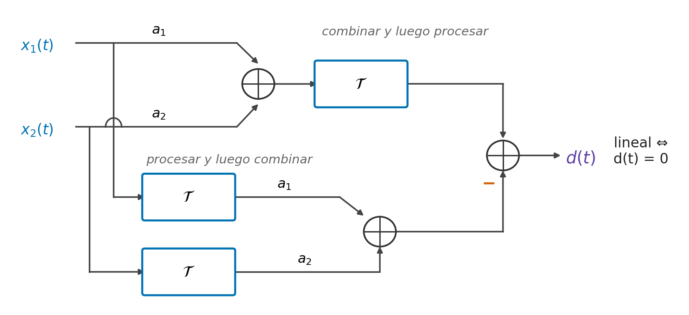
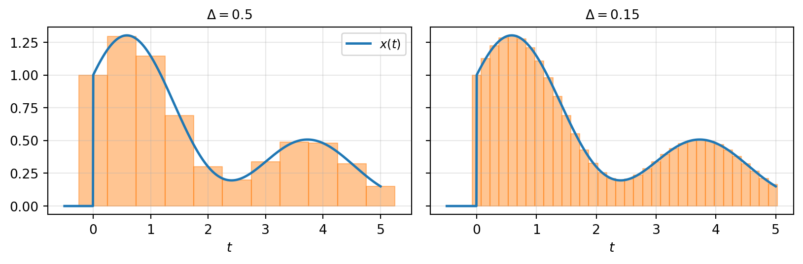
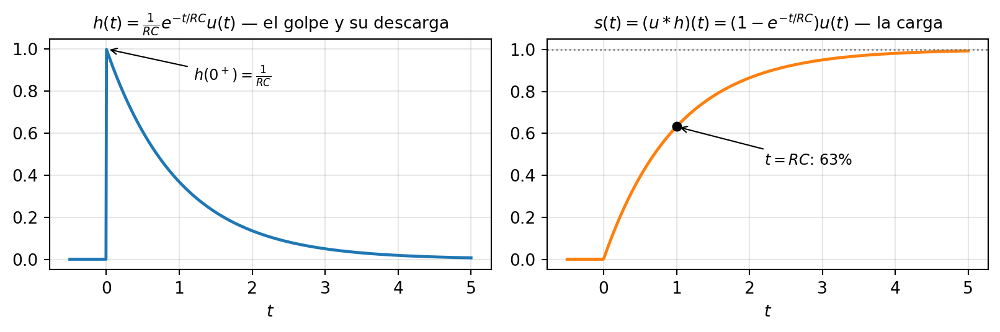

2 Sistemas
NotaObjetivos del capítulo [U2.1–U2.6]
Al terminar este capítulo podrás: decidir si un sistema es lineal, invariante, causal, estable y/o con memoria — con demostración o contraejemplo, nunca “por inspección” [U2.1]; explicar por qué linealidad + invariancia implican que una sola función h(t) caracteriza al sistema completo, reproduciendo la derivación [U2.2]; calcular convoluciones analítica y gráficamente, y anticipar soporte y forma sin calcular [U2.3]; modelar sistemas físicos con EDOs lineales y obtener su h(t) [U2.4]; leer causalidad y estabilidad directamente desde h(t) [U2.5]; y calcular la autocorrelación de una señal de energía, leyéndola como la convolución de la señal con su propia inversión temporal [U2.6].
Prerrequisito: el impulso \delta(t) y su propiedad de muestreo (Sección 1.5). Este capítulo cobra, una por una, las semillas que el capítulo 1 dejó plantadas.
2.1 La caja bajo interrogatorio
El capítulo 1 terminó con una promesa a medio pagar. Escuchamos el impulso disparado en la iglesia de St. Patrick y dijimos, sin poder justificarlo todavía: si conoces la respuesta de un sistema al impulso, conoces su respuesta a todo (Sección 1.5.4). Este capítulo existe para convertir esa frase en un teorema — y para usarlo.
Desde el comienzo dibujamos los sistemas como cajas: x \rightarrow \boxed{\;\mathcal{S}\;} \rightarrow y. Hasta ahora la caja es un misterio con nombre pintoresco: la iglesia, un ecualizador, la suspensión de un auto. Hoy dejamos de mirarla con respeto y empezamos a interrogarla. Le haremos cinco preguntas:
- ¿Respeta las sumas y los escalados? (linealidad)
- ¿Se comporta igual hoy que mañana? (invariancia en el tiempo)
- ¿Puede ver el futuro? (causalidad)
- ¿Puede explotar con una entrada inocente? (estabilidad)
- ¿Recuerda el pasado? (memoria)
¿Por qué justo estas cinco? Las tres últimas son las que un ingeniero necesita para saber si puede construir el sistema y confiar en él. Pero las dos primeras valen oro por otra razón: si un sistema responde “sí” a ambas, ocurre algo casi milagroso — una sola función bastará para predecir su salida ante cualquier entrada. Ese es el teorema central del capítulo (Sección 2.3), y la razón de ser de todo lo demás.
Notación: escribimos y(t) = T\{x(t)\} para “la salida del sistema T ante la entrada x”. Y una regla de disciplina que gobierna toda la unidad (y las interrogaciones): cada propiedad se decide igual que en matemática. Para afirmarla, hay que demostrarla para toda entrada; para refutarla, basta un contraejemplo concreto. “Se ve lineal” vale cero puntos, siempre.
2.2 Las cinco propiedades
2.2.1 Linealidad
Un sistema lineal “divide y conquista”: procesa las partes de la entrada por separado y suma los resultados.
ImportanteDefinición: sistema lineal
Un sistema T es lineal si cumple dos condiciones, para todas las entradas y constantes involucradas:
- Homogeneidad: si x(t) \to y(t), entonces a\,x(t) \to a\,y(t).
- Aditividad: si x_1 \to y_1 y x_2 \to y_2, entonces x_1 + x_2 \to y_1 + y_2.
Juntas forman el principio de superposición: T\{a\,x_1(t) + b\,x_2(t)\} = a\,y_1(t) + b\,y_2(t)
Las intuiciones físicas: gritar el doble de fuerte a un micrófono produce el doble de voltaje (homogeneidad); dos personas hablando a la vez producen la suma de lo que produciría cada voz sola (aditividad). Los lineales de manual son el resistor (i = v/R, ley de Ohm) y el resorte (x = F/k, ley de Hooke): el doble de causa, el doble de efecto; causas sumadas, efectos sumados.
Un chequeo rápido que descarta sin calcular: tomando a = 0 en la homogeneidad, todo sistema lineal cumple entrada cero \Rightarrow salida cero. Si la caja produce algo “de la nada”, no es lineal — así cae de un vistazo y(t) = x(t) + 1 (entrada cero, salida 1), la trampa favorita de las interrogaciones: sumar una constante no es lineal, aunque la fórmula se “vea” recta.
El contraejemplo canónico — el cuadrador y(t) = x^2(t) (Oppenheim, ejemplo 1.18). Fallan las dos condiciones:
- Homogeneidad: a\,x \to (a x)^2 = a^2\,x^2 = a^2\,y \neq a\,y. Falla ✗ (con a = 2: la salida se cuadruplica, no se duplica).
- Aditividad: x_1 + x_2 \to (x_1 + x_2)^2 = x_1^2 + x_2^2 + \mathbf{2\,x_1 x_2}. Ese término cruzado — la intermodulación — no es y_1 + y_2. Falla ✗.
El término cruzado se escucha: si a un sistema cuadrático entran dos notas puras, salen además frecuencias que nadie tocó (la suma y la diferencia de las originales — lo cuantificaremos con Fourier). Eso es la distorsión. Un amplificador real es su versión cotidiana: lineal para señales pequeñas, pero al subir la ganancia la salida se recorta (clipping) en el nivel de saturación, y duplicar la entrada ya no duplica la salida. Con violar la homogeneidad una vez, basta. (El pedal de distorsión de un guitarrista es, literalmente, un sistema diseñado para ser no lineal: la gracia está en las frecuencias nuevas.)
Una letra chica que Oppenheim convierte en ejemplo (1.19) y que conviene conocer: las constantes de la superposición pueden ser complejas. El sistema y = \Re\{x\} es aditivo, pero falla la homogeneidad con a = j — no es lineal. Como nuestras señales pueden ser complejas, la definición se toma en serio con escalares complejos.
2.2.2 Invariancia en el tiempo
ImportanteDefinición: sistema invariante en el tiempo
T es invariante en el tiempo si retrasar la entrada solo retrasa la salida, sin cambiarle la forma: si x(t) \to y(t), entonces x(t - t_0) \;\to\; y(t - t_0) \qquad \text{para todo } t_0.
El sistema se comporta igual hoy que mañana: un diapasón golpeado ahora o en una hora suena idéntico, solo que después — el diapasón no envejece. En un circuito, invariancia significa que R y C no cambian con el tiempo; en un auto, que la masa y el roce son los de siempre (un día con la maleta cargada, el sistema es otro).
Cómo se verifica (la receta que hay que dominar): comparar dos caminos.
- Retardar y luego procesar: meter x(t - t_0) al sistema y ver qué sale.
- Procesar y luego retardar: tomar la salida y(t) y reemplazar t \mapsto t - t_0.
Si ambos caminos coinciden para todo x y todo t_0: invariante. Si difieren para algún caso concreto: variante, y ese caso es tu contraejemplo.
TipEjemplo resuelto (calibre I1): modulación AM
Clasifica y(t) = x(t)\cos(\omega_0 t) — así se sube una señal de audio a una portadora de radio — según linealidad e invariancia.
Solución. ¿Lineal? Sí, con entradas genéricas: T\{a x_1 + b x_2\} = \big(a\,x_1(t) + b\,x_2(t)\big)\cos(\omega_0 t) = a\,y_1(t) + b\,y_2(t)\ \checkmark
¿Invariante? Camino 1: x(t-t_0) \to x(t-t_0)\cos(\omega_0 t). Camino 2: y(t-t_0) = x(t-t_0)\cos(\omega_0(t-t_0)). No coinciden. Contraejemplo concreto: con x(t) = 1 constante, la entrada retardada sigue siendo 1 y produce \cos(\omega_0 t); pero la salida retardada es \cos(\omega_0(t-t_0)). Variante ✗.
Moraleja doble: (i) linealidad e invariancia son propiedades independientes; (ii) el error clásico es creer que “aparece un coseno con t adentro \Rightarrow no lineal”. Es al revés: multiplicar por una función fija del tiempo preserva la linealidad y rompe la invariancia.
Dos contraejemplos más, ambos canónicos de Oppenheim, que completan el arsenal:
El escalador y(t) = x(2t) es variante (ejemplo 1.16) — y es el más traicionero, porque “comprimir es comprimir siempre igual, ¿no?”. No: el sistema comprime el tiempo hacia el origen, y eso ancla un instante privilegiado. Con un pulso como entrada, los dos caminos se separan a la vista:
La explicación en una línea: el retardo de la salida es la mitad del que debería, porque la compresión también comprime al desplazamiento — exactamente el fenómeno x(at - b) del capítulo 1 (Sección 1.3.1), ahora mordiendo como propiedad de sistemas.
La ganancia variable y[n] = n\,x[n] es variante (ejemplo 1.15, en tiempo discreto): es lineal — la superposición sale directa, como en y(t) = t\,x(t) — pero el contraejemplo mínimo la delata: \delta[n] \to n\,\delta[n] = 0 (la ganancia en n=0 es cero), mientras que \delta[n-1] \to n\,\delta[n-1] = \delta[n-1]. La entrada retardada no produce la salida retardada (que sería 0 corrido, es decir 0). Un amplificador cuyo volumen depende de la hora: lineal, pero no suena igual hoy que mañana.
La tabla que ordena los cuatro mundos (verifica cada casilla — es entrenamiento directo de I1):
| Invariante | Variante | |
|---|---|---|
| Lineal | y = x(t-2) (retardo) | y = x(t)\cos(\omega_0 t), \;y = t\,x(t), \;y = x(2t) |
| No lineal | y = x^2(t) (cuadrador) | y = t\,x^2(t) |
2.2.3 Causalidad, estabilidad y memoria
ImportanteDefinición: causalidad, estabilidad BIBO, memoria
Causal: la salida en t depende solo de la entrada en instantes \leq t — el sistema no ve el futuro.
Estable BIBO (bounded input, bounded output): toda entrada acotada produce salida acotada — si existe M con |x(t)| \leq M para todo t, existe M' con |y(t)| \leq M'.
Con memoria: y(t) depende de algo más que x(t) en ese mismo instante. Sin memoria: y(t) es función de x(t) y nada más.
Causalidad. y(t) = x(t-2) es causal (usa el pasado); y(t) = x(t+1) no (lee mañana); y(t) = x(-t) no — para t = -5 necesita x(5), que aún no ocurre. Todo sistema físico operando en tiempo real es causal. Pero un sistema que procesa datos grabados puede no serlo: suavizar una foto usa píxeles “futuros” en ambas direcciones. No causal no significa imposible — significa no en vivo.
Estabilidad. y = x^2 es estable (|x| \leq M \Rightarrow |y| \leq M^2 — estable no exige lineal; Oppenheim muestra incluso que y = e^{x(t)} es estable, acotado por e^M). El contraejemplo importante es el integrador y(t) = \int_{-\infty}^{t} x(\tau)\,d\tau: la entrada más inocente del curso, x = u(t) (acotada por 1), produce la rampa t\,u(t), que crece sin límite. Inestable — y guarda este ejemplo, que reaparecerá leído desde h en la Sección 2.8.
Memoria. El resistor no tiene (i(t) = v(t)/R: foto instantánea); el condensador sí (v(t) = \frac{1}{C}\int_{-\infty}^{t} i\,d\tau: acumula toda su historia); el retardo x(t-2) también (recuerda 2 segundos). Memoria y causalidad se confunden a menudo: memoria pregunta si el sistema mira otros instantes; causalidad, si alguno de esos instantes está en el futuro.
AdvertenciaLa regla de oro de la U2 (vale puntos en cada interrogación)
Propiedad que se cumple → demostración con entradas genéricas (x, x_1, x_2 arbitrarias, constantes a, b arbitrarias). Propiedad que falla → contraejemplo concreto y explícito (una entrada específica, el cálculo de ambos lados, la desigualdad a la vista). No hay tercera opción, y el orden inteligente es intentar primero el contraejemplo: si no aparece, la demostración suele salir sola.
2.3 El teorema del curso: LTI ⇒ convolución
2.3.1 La promesa sobre la mesa
Un sistema que pasa los dos primeros tests — Lineal e Invariante en el Tiempo, LTI — recibe el premio mayor del semestre. El enunciado que vamos a construir:
Teorema (caracterización de sistemas LTI). Si un sistema es LTI, su respuesta al impulso h(t) = T\{\delta(t)\} determina la salida ante cualquier entrada.
Piensa lo que esto afirma. Un sistema es un objeto enorme — una función que come funciones. Conocerlo “completo” parecería exigir una tabla infinita: cada entrada posible con su salida. El teorema dice que basta un solo experimento — golpear la caja con un impulso y grabar lo que responde — y esa única función h(t) contiene todo. Es la mejor oferta del semestre, y se demuestra con solo dos ingredientes: una fórmula del capítulo 1 y las dos propiedades recién definidas.
2.3.2 Cobrando la semilla: toda señal es una suma de impulsos
En la Sección 1.5.2 del capítulo 1 apareció esta identidad, y la llamamos — textualmente — la semilla más importante que este capítulo planta:
x(t) = \int_{-\infty}^{\infty} x(\tau)\,\delta(t - \tau)\,d\tau
Llegó la hora de cobrarla. Allá la leímos como propiedad de muestreo (“el impulso extrae el valor de x”). Hoy la leemos al revés, y esa relectura es todo el punto:
Toda señal es una superposición continua de impulsos desplazados: en cada instante \tau hay un impulso \delta(t - \tau), pesado por el valor x(\tau)\,d\tau.
Si el cambio de lectura no convence, la construcción de Alvarado lo hace visible: aproxima x(t) con una escalera de pulsos angostos p_\Delta de ancho \Delta, cada uno parado en k\Delta con área x(k\Delta)\,\Delta:

x(t) \;\approx\; \sum_{k=-\infty}^{\infty} x(k\Delta)\;p_\Delta(t - k\Delta)\,\Delta \qquad \xrightarrow{\;\Delta \to 0\;} \qquad x(t) = \int_{-\infty}^{\infty} x(\tau)\,\delta(t-\tau)\,d\tau
La señal quedó escrita como combinación lineal de un solo tipo de ladrillo: impulsos desplazados. Y ahora las dos propiedades hacen su trabajo. ¿Qué sabe hacer un sistema lineal con las combinaciones lineales? ¿Y uno invariante con los desplazamientos?
2.3.3 La derivación: linealidad reparte, invariancia traslada
Sea T un sistema LTI con respuesta al impulso h(t). Seguimos la entrada paso a paso — cuatro líneas, y cada una usa exactamente una propiedad:
| # | Entrada | Salida | Propiedad usada |
|---|---|---|---|
| 1 | \delta(t) | h(t) | definición de h |
| 2 | \delta(t-\tau) | h(t-\tau) | invariancia (traslada) |
| 3 | x(\tau)\,\delta(t-\tau) | x(\tau)\,h(t-\tau) | homogeneidad (x(\tau) es un número: el peso del ladrillo) |
| 4 | \displaystyle\int x(\tau)\,\delta(t-\tau)\,d\tau | \displaystyle\int x(\tau)\,h(t-\tau)\,d\tau | aditividad, llevada al límite integral |
Pero la entrada de la línea 4 es, por la sección anterior, exactamente x(t). Entonces:
ImportanteDefinición: la integral de convolución
Para un sistema LTI con respuesta al impulso h(t), la salida ante cualquier entrada x(t) es y(t) \;=\; (x * h)(t) \;=\; \int_{-\infty}^{\infty} x(\tau)\,h(t-\tau)\,d\tau El operador * actúa entre señales: x * h es una señal nueva. Dentro de la integral la variable es \tau; el instante t es un parámetro — para cada t, una integral completa.
Léela en voz alta con la derivación en mente: la salida en t es la suma de los ecos de todos los impulsos que componen la entrada — el impulso que entró en \tau, de peso x(\tau)\,d\tau, aporta hoy su respuesta ya envejecida h(t-\tau). Esta fórmula no se memoriza: se reconstruye en cuatro líneas, y las interrogaciones piden precisamente eso.
Honestidad matemática (treinta segundos y seguimos): pasar de sumas finitas a la integral requiere que el sistema respete límites (continuidad). Los sistemas físicos de este curso lo hacen; los patológicos que no, viven en libros de análisis funcional. Seguimos.
Dos lecturas del mismo teorema, y ambas importan:
- Análisis: todo sistema LTI es una convolución. No “se puede describir con”: es. La caja misteriosa quedó reducida a una función.
- Síntesis (la que paga el sueldo): si quieres un sistema que haga algo — filtrar, reverberar, derivar — te basta diseñar la h(t) correcta. En las unidades 6 y 7 diseñaremos filtros exactamente así.
2.3.4 Primeros cálculos
Tres convoluciones que salen gratis con la derivación fresca:
1. El neutro: x(t) * \delta(t) = x(t). El sistema con h = \delta es la identidad — un cable.
2. El retardo: x(t) * \delta(t - t_0) = x(t - t_0). Convolucionar con un impulso desplazado desplaza. (Verifícalo con la propiedad de muestreo: \int x(\tau)\,\delta(t - t_0 - \tau)\,d\tau = x(t - t_0).)
3. La primera de verdad, con todos sus pasos:
TipEjemplo resuelto (calibre I1): escalón contra exponencial
Calcula y(t) = u(t) * e^{-2t}u(t).
Solución. y(t) = \int_{-\infty}^{\infty} u(\tau)\,e^{-2(t-\tau)}\,u(t-\tau)\,d\tau Los dos escalones recortan la integral: u(\tau) exige \tau > 0; u(t - \tau) exige \tau < t. Si t < 0, no queda intervalo: y(t) = 0. Si t \geq 0: y(t) = \int_0^t e^{-2(t-\tau)}\,d\tau = e^{-2t}\int_0^t e^{2\tau}\,d\tau = e^{-2t}\cdot\frac{e^{2t} - 1}{2} = \frac{1 - e^{-2t}}{2} \Rightarrow\quad y(t) = \tfrac{1}{2}\big(1 - e^{-2t}\big)\,u(t) Sube desde 0 y satura en \tfrac12. Chequeo de cordura: la saturación debe valer el área de h (una entrada que se queda en 1 termina “cosechando” toda la respuesta): \int_0^\infty e^{-2t}\,dt = \tfrac12 ✓. Guarda este resultado: en la Sección 2.7 descubriremos que es la carga de un condensador.
2.4 El misterio de la iglesia, resuelto
El capítulo 1 abrió con dos audios y una pregunta que quedó flotando: ¿qué le pasó a la voz? Después escuchamos un impulso disparado dentro de la iglesia de St. Patrick, y dijimos — sin poder justificarlo — que lo que sonaba tras el golpe era “la iglesia respondiendo”. Ahora, por primera vez, tienes el lenguaje completo. Escucha de nuevo, con oídos nuevos:
Eso es h(t): la respuesta al impulso de la iglesia. Una función. Medida con un golpe.
Y eso — dilo tú antes de seguir leyendo — es:
\text{voz en la iglesia} \;=\; (\text{voz seca}) * h_{\text{iglesia}}
La voz nunca estuvo en esa iglesia. Nadie viajó a Inglaterra a grabarla. Alguien midió h_{\text{iglesia}}(t) una vez, con un impulso, y la voz reverberante del comienzo del curso se calculó: es la integral de convolución de la Sección 2.3.3, evaluada numéricamente. Cada instante de la voz seca dejó su eco h desplazado y pesado; la suma de todos esos ecos es lo que oíste.
Un capítulo entero tardamos en poder decir esta frase. Escríbela completa, porque es de las que ordenan una carrera: conocer la respuesta al impulso de un sistema LTI es conocer el sistema; aplicarlo es convolucionar.
El caso de juguete para llevar en el bolsillo — un eco simple: h(t) = \delta(t) + \alpha\,\delta(t - T), el sonido directo más una reflexión atenuada que llega T segundos tarde. Por el neutro y el retardo de la Sección 2.3.4: y(t) = x(t) + \alpha\,x(t - T), la señal más su copia retrasada. Una iglesia real es esto mismo con miles de ecos fundidos en una h(t) continua de varios segundos. Y esto no es metáfora pedagógica: los plugins de “reverberación por convolución” que usan los estudios de grabación hacen literalmente esta integral, con h medidas a golpe y globo en salas reales. (Cómo la calculan tan rápido es un secreto de la unidad 7 — la palabra clave es FFT.)
2.5 La convolución como oficio
2.5.1 El método gráfico: invertir, desplazar, multiplicar, integrar
La integral, ahora como oficio. En y(t) = \int x(\tau)\,h(t-\tau)\,d\tau todo ocurre en el eje \tau; el parámetro t decide dónde está parada una de las señales. La receta:
- Invertir: dibujar h(-\tau), el espejo de h.
- Desplazar: correrla hasta h(t - \tau) — parada en \tau = t, mirando hacia atrás.
- Multiplicar: superponerla con x(\tau) y formar el producto.
- Integrar: el área del producto es un número, y(t). Repetir para cada régimen de t.
El trabajo real está en el análisis de casos: identificar los rangos de t donde el traslape cambia de naturaleza, y resolver una integral por rango.
TipEjemplo resuelto (el canónico): rect ∗ rect = tri
Calcula y(t) = \operatorname{rect}(t) * \operatorname{rect}(t).
Solución. \operatorname{rect}(\tau) vive en [-\tfrac12, \tfrac12]; la otra, invertida y desplazada, \operatorname{rect}(t - \tau), vive en [t - \tfrac12,\; t + \tfrac12]. (La inversión aquí es invisible porque rect es par — no es que el método se salte el paso 1; es que el espejo de un rect es él mismo. Con señales asimétricas, olvidar la inversión es el error número uno.) Cuatro casos:
- t < -1: las ventanas ni se tocan (t + \tfrac12 < -\tfrac12). Producto nulo → y(t) = 0.
- -1 \leq t \leq 0: traslape [-\tfrac12,\; t + \tfrac12], de largo t + 1. El producto vale 1 ahí → y(t) = t + 1.
- 0 \leq t \leq 1: traslape [t - \tfrac12,\; \tfrac12], de largo 1 - t → y(t) = 1 - t.
- t > 1: se pasaron de largo → y(t) = 0.
\Rightarrow\quad \operatorname{rect}(t) * \operatorname{rect}(t) = \operatorname{tri}(t)
El triángulo del capítulo 1 no era un capricho del catálogo (Sección 1.4 prometió exactamente esto): \operatorname{tri} es lo que pasa cuando un rect se mira en otro. Nota además dos cosas para la sección siguiente: el resultado es continuo aunque los rect no lo eran, y su soporte [-1, 1] es la suma de los soportes.

Y el mismo oficio con una señal asimétrica — este ejemplo es, textual, de calibre I1:
TipEjemplo resuelto (calibre I1): pulso contra exponencial
Dadas h(t) = 3e^{-3t}u(t) y x(t) = 2\big(u(t) - u(t-1)\big), encuentra (x * h)(t).
Solución. Invertimos la exponencial y dejamos el pulso quieto (por la conmutativa — tabla siguiente — da lo mismo cuál se invierte; regla práctica: la que haga más simple el análisis de casos). Entonces x(\tau) vale 2 en [0, 1], y h(t - \tau) = 3e^{-3(t-\tau)} vive donde \tau < t. Tres regímenes:
- t < 0: la cola de h(t-\tau) aún no alcanza al pulso → y(t) = 0.
- 0 \leq t < 1: traslape [0, t]: y(t) = \int_0^t 2\cdot 3e^{-3(t-\tau)}\,d\tau = 6e^{-3t}\cdot\frac{e^{3t} - 1}{3} = 2\big(1 - e^{-3t}\big)
- t \geq 1: el pulso completo [0, 1] queda bajo la cola: y(t) = \int_0^1 6e^{-3(t-\tau)}\,d\tau = 2e^{-3t}\big(e^{3} - 1\big)
Chequeos que valen puntos: continuidad en t = 1 — ambas ramas dan 2(1 - e^{-3}) ✓; soporte [0, \infty) = suma de soportes ✓; área \int y = \big(\int x\big)\big(\int h\big) = 2 \cdot 1 = 2 ✓ (la ley del área, dos párrafos más abajo). La forma cuenta la historia física: y crece mientras el pulso alimenta al sistema y decae como e^{-3t} cuando el pulso ya pasó.
El error típico en estas convoluciones es perder los límites de integración al desplazar. El antídoto es no negociable: dibujar el traslape para cada régimen — nunca “de memoria”.
2.5.2 Propiedades: la caja de herramientas
| Propiedad | Fórmula | Lectura de sistemas |
|---|---|---|
| Conmutativa | x * h = h * x | Da lo mismo cuál se invierte: invertir siempre la más simple |
| Asociativa | (x * h_1) * h_2 = x * (h_1 * h_2) | Cascada de sistemas LTI ≡ un solo sistema con h_1 * h_2, en cualquier orden |
| Distributiva | x * (h_1 + h_2) = x * h_1 + x * h_2 | Sistemas en paralelo suman sus h |
| Neutro | x * \delta = x | El cable |
| Desplazamiento | x(t-a) * h(t-b) = y(t-a-b) | Los retardos se acumulan |
| Derivada | (x * h)' = x' * h = x * h' | Derivar la salida ≡ derivar una de las dos |
(La conmutativa se demuestra en una línea con el cambio de variable \sigma = t - \tau — hazlo ahora, es de las demostraciones favoritas de las interrogaciones. La ley del área es el ejercicio [DB E0044].)
Y las dos “leyes de conservación” que permiten chequear — y anticipar — resultados:
- Soporte: si x vive en [a_1, b_1] y h en [a_2, b_2], entonces x * h vive en [a_1 + a_2,\; b_1 + b_2]. En particular, la duración de la convolución es la suma de las duraciones. (Intuición desde la derivación: el primer impulso de x dispara h en a_1 + a_2; el último eco muere en b_1 + b_2.)
- Área: \displaystyle\int y = \Big(\int x\Big)\Big(\int h\Big) — el área de la convolución es el producto de las áreas.
Chequeo con rect ∗ rect: soporte [-\tfrac12 - \tfrac12,\; \tfrac12 + \tfrac12] = [-1, 1] ✓; área 1 \times 1 = 1 = área de tri ✓.
2.5.3 Anticipar sin calcular
En la I1 hay, casi todos los años, una pregunta que muestra señales y pide emparejar cuáles se convolucionaron para producir cuáles — sin calcular nada. Se responde con cuatro reglas rápidas:
- Soporte: los extremos se suman. Descarta la mitad de las opciones de un plumazo.
- Suavidad: convolucionar suaviza. Dos señales discontinuas dan una continua (rect ∗ rect); las esquinas se redondean.
- Área: producto de las áreas. Si una señal tiene área 0 (una impar, por ejemplo), la convolución tiene área 0.
- Casos extremos: la convolución de señales acotadas de soporte finito nace y muere en cero; y si hay impulsos a la vista, convolucionar contra \delta desplazadas es copiar y pegar.
Ejercicio exprés (30 segundos cada uno, sin lápiz): (a) \operatorname{rect}(t) * \operatorname{tri}(t): ¿soporte y forma? [Soporte [-\tfrac32, \tfrac32]; una campana suave de área 1, más lisa que el tri.] (b) \operatorname{rect}(t) * \big[\delta(t+2) - \delta(t-2)\big]: ¿qué sale? [\operatorname{rect}(t+2) - \operatorname{rect}(t-2): una copia positiva y una negativa, sin cálculo alguno.]
Estas reglas no son trucos de prueba: son el modo en que un ingeniero lee una convolución antes (y después) de calcularla. El cálculo que no pasa el chequeo de soporte y área está malo, siempre.
Y se escuchan. Aquí está la misma h_{\text{iglesia}} de antes, ahora convolucionada con una batería grabada en seco. Antes de reproducir, predice con las reglas: cada golpe de bombo dura unos 50 ms y la h de la iglesia unos 2 s — ¿cuánto dura cada golpe en la salida? ¿Y dos golpes separados 0.3 s, se escucharán separados?
Lo que oíste: cada golpe — casi un impulso — sale durando ~2 s (soporte: suma de soportes), y las colas de golpes vecinos se superponen y suman (¡aditividad!), emborronando el ritmo rápido en un lavado continuo. La convolución suaviza y alarga; nuestra intuición acústica lee esa reverberación larga como “sala grande y lejana”. Tres reglas de papel, verificadas de oído.
2.6 La señal comparada consigo misma: autocorrelación
Hay una convolución especial que merece nombre propio: la de una señal con su propia inversión temporal. Aparece tan seguido en procesamiento de señales — detectar períodos, medir ecos, estimar espectros — que conviene conocerla desde ya.
ImportanteDefinición: autocorrelación
Para una señal real de energía, R_x(\tau) = \int_{-\infty}^{\infty} x(t)\,x(t+\tau)\,dt = x(\tau) \ast x(-\tau) R_x(\tau) mide cuánto se parece la señal a sí misma corrida en \tau.
Tres propiedades salen casi solas:
- R_x(0) = E_x: sin desfase el traslape es perfecto, y la integral es la energía del capítulo 1.
- R_x es siempre par, aunque x no lo sea: el cambio de variable u = t+\tau da R_x(-\tau) = \int x(t)\,x(t-\tau)\,dt = \int x(u+\tau)\,x(u)\,du = R_x(\tau). Correr la copia hacia un lado o hacia el otro produce el mismo traslape.
- |R_x(\tau)| \le R_x(0): ninguna copia corrida se parece más que la señal a sí misma (es la desigualdad de Cauchy–Schwarz, la misma geometría que reaparecerá en el capítulo 3).
El ejemplo canónico ya lo hiciste. Como rect es par, su autocorrelación es el rect ∗ rect = tri de la sección anterior. Reléelo con estos ojos: el triángulo mide el traslape de un pulso con su copia corrida — máximo en \tau = 0, cero apenas dejan de tocarse. Y la demo del “detector de período” de la primera semana era esencialmente esta función: caía a cero justo donde la copia corrida volvía a calzar.
La promesa (se cumple en el capítulo 3, Sección 3.5.5): la transformada de Fourier de R_x es |X(\omega)|^2 — la autocorrelación y la densidad espectral de energía son la misma información en dos dominios.
En el banco: [DB E0048] (partes par e impar de R_x), [DB E0295] (rect → tri como autocorrelación), [DB E0296] (la exponencial causal, con la sorpresa de que R_x sale par).
2.7 De dónde salen las h(t): ecuaciones diferenciales
Hasta aquí los sistemas eran cajas dadas. Pregunta legítima: en la práctica, ¿de dónde salen las h(t)? Respuesta: casi siempre, de una ley física escrita como ecuación diferencial.
Ejemplo 1 — circuito RC (entrada: voltaje de la fuente x(t); salida: voltaje del condensador y(t)). Kirchhoff más la ley del condensador (i = C\,y'): x(t) = R\,i(t) + y(t) = RC\,\frac{dy}{dt} + y(t)
Ejemplo 2 — masa-resorte-amortiguador (entrada: fuerza x(t); salida: posición y(t)). Newton, Hooke y roce viscoso: m\,\frac{d^2y}{dt^2} + b\,\frac{dy}{dt} + k\,y(t) = x(t)
Un circuito y la suspensión de un auto: física sin nada en común y, sin embargo, la misma especie matemática: \sum_{k=0}^{N} a_k\,\frac{d^k y}{dt^k} \;=\; \sum_{k=0}^{M} b_k\,\frac{d^k x}{dt^k} una EDO lineal de coeficientes constantes. Y las dos palabras que valen oro reaparecen solas: lineal — la derivada reparte sumas y escalados → superposición ✓; coeficientes constantes — R, C, m, b, k no dependen de t → el sistema es el mismo hoy y mañana ✓. Una EDO así (con el sistema en reposo inicial: sin energía guardada antes de que llegue la entrada) define un sistema LTI. Por lo tanto tiene una h(t)… y por la Sección 2.3.3, esa h(t) lo cuenta todo. Vamos a buscarla.
Honestidad de treinta segundos: si las condiciones iniciales no son nulas, el sistema “recuerda” algo que no vino de x, y la homogeneidad falla (entrada cero ya no da salida cero). Reposo inicial es la letra chica del teorema. Laplace (capítulo 4) manejará condiciones iniciales con elegancia total.
2.7.1 La respuesta al impulso de un sistema de primer orden
Buscamos la h(t) del RC: la solución de RC\,h'(t) + h(t) = \delta(t), \qquad \text{en reposo: } h(t) = 0 \text{ para } t < 0.
Paso 1 — lejos del golpe (t > 0): la ecuación es homogénea, RC\,h' + h = 0, y su solución la conoces de cálculo: h(t) = A\,e^{-t/RC}.
Paso 2 — el golpe fija A: integrar la EDO en una ventana diminuta (0^-, 0^+) alrededor del impulso: RC\big[h(0^+) - h(0^-)\big] + \underbrace{\int_{0^-}^{0^+} h\,dt}_{\to\,0\ (h\ \text{finita})} = \underbrace{\int_{0^-}^{0^+}\delta\,dt}_{=\,1} \;\Rightarrow\; h(0^+) = \frac{1}{RC} El impulso no puede “durar”: lo único que hace es cargar el sistema de un salto y desaparecer. Entonces:
\boxed{\;h(t) = \frac{1}{RC}\,e^{-t/RC}\,u(t)\;}
Verificación por sustitución (hazla — es pregunta tipo de la I1, [DB E0037]): con u' = \delta y la regla del producto, h'(t) = -\frac{1}{(RC)^2}\,e^{-t/RC}\,u(t) + \frac{1}{RC}\,\underbrace{e^{-t/RC}\,\delta(t)}_{=\ \delta(t)\ \text{(muestreo, cap. 1)}} \quad\Rightarrow\quad RC\,h'(t) + h(t) = \delta(t)\ \checkmark (el término con u se cancela exactamente contra h, y sobrevive el impulso — la propiedad f(t)\,\delta(t) = f(0)\,\delta(t) haciendo su trabajo).

Chequeos de cordura (el hábito de siempre):
- Área de h: \int_0^\infty \frac{1}{RC}e^{-t/RC}\,dt = 1. Sentido físico: ante entrada constante, el condensador termina copiando la entrada (ganancia DC igual a 1).
- Respuesta al escalón: s(t) = (u * h)(t) = \big(1 - e^{-t/RC}\big)u(t) — es el cálculo de la Sección 2.3.4 (allá con 1/RC = 2): la curva de carga del condensador que viste en física. Y de paso, por la propiedad de la derivada: s' = h. Medir la respuesta al escalón y derivarla es la manera práctica de obtener h sin fabricar un impulso perfecto.
La constante \tau = RC (segundos) manda el reloj: en t = \tau queda e^{-1} \approx 37\% del arranque. Primer orden = una sola exponencial. En el capítulo 4, Laplace entregará el mapa completo: cada polo, una exponencial.
NotaVariables de estado: una primera cita (no evaluable)
La EDO de orden 2 del masa-resorte puede reescribirse como dos ecuaciones de orden 1 eligiendo como incógnitas lo que el sistema recuerda — la posición y la velocidad — y empaquetándolas en la plantilla universal \dot{\mathbf{x}} = A\mathbf{x} + B u, \;y = C\mathbf{x} + D u. El vector \mathbf{x} es el estado: la foto mínima del presente que basta (junto con la entrada futura) para predecir todo el futuro. Para el resorte: dónde está y a qué velocidad va; para el RC: el voltaje del condensador, un solo número. Es el lenguaje nativo del control automático y de toda simulación numérica — ahí lo reencontrarás con todos los honores. En este curso es solo esta mención: no entra en ninguna evaluación. Nuestra caracterización oficial de un LTI es h(t) y, pronto, sus transformadas.
2.8 Causalidad y estabilidad, leídas desde h(t)
En la Sección 2.2 las propiedades se verificaban entrada por entrada. Para sistemas LTI hay un atajo definitivo, y es la última pieza del capítulo: todas las preguntas sobre el sistema se convierten en preguntas sobre la función h(t).
ImportanteTeoremas: causalidad y estabilidad desde h(t)
Para un sistema LTI con respuesta al impulso h(t):
- Causal \iff h(t) = 0 para todo t < 0.
- Estable BIBO \iff h es absolutamente integrable: \displaystyle\int_{-\infty}^{\infty} |h(\tau)|\,d\tau < \infty.
Por qué la causalidad: escribe la convolución (conmutada) como y(t) = \int h(\tau)\,x(t - \tau)\,d\tau. El número h(\tau) es el peso con que la entrada de hace \tau segundos influye hoy. Si h(\tau) \neq 0 para algún \tau < 0, el sistema pesa entradas de un “hace negativo”: el futuro. (Y es natural desde la definición: h es la respuesta a un golpe en t = 0; responder antes del golpe es adivinar.)
Por qué la estabilidad — la dirección útil, en dos líneas: si |x| \leq M, |y(t)| \leq \int |h(\tau)|\,|x(t - \tau)|\,d\tau \leq M\int |h(\tau)|\,d\tau < \infty Honestidad (treinta segundos): la vuelta también vale — si la integral diverge, existe una entrada acotada maligna (x(t - \tau) = \operatorname{sgn} h(\tau), que se alía con cada signo de h) que hace explotar la salida. Queda de lectura.

El interrogatorio completo, ahora en una tabla que se responde en segundos (cúbrela y resuélvela — es formato exacto de I1):
| h(t) | ¿Causal? | ¿Estable? | Por qué |
|---|---|---|---|
| e^{-2t}\,u(t) | sí | sí | h = 0 en t<0; \int|h| = \tfrac12 |
| u(t) (el integrador) | sí | no | \int|u| = \infty — coincide con la rampa de la Sección 2.2.3 |
| e^{t}\,u(t) | sí | no | explota él solo |
| \operatorname{rect}(t) | no | sí | h \neq 0 en t \in (-\tfrac12, 0); área 1 |
| \delta(t - 1) (retardo puro) | sí | sí | un impulso en t = 1; “área” 1 |
Ficha una conexión hacia adelante: “h decae lo bastante rápido” será, en el plano s de Laplace, “los polos están a la izquierda”. La condición \int |h| < \infty es la versión en el tiempo de esa geometría — la frase se cobra en el capítulo 4, igual que este capítulo cobró las semillas del 1.
2.9 En una página
- Cinco propiedades, una disciplina: demostración con entradas genéricas o contraejemplo concreto. Contraejemplos de bolsillo: x^2 (no lineal, intermodulación), x(t)+1 (entrada cero → salida no nula), x(t)\cos(\omega_0 t) y t\,x(t) y x(2t) y n\,x[n] (lineales pero variantes), el integrador con u(t) (inestable: la rampa).
- LTI ⇒ convolución, la derivación en 4 líneas: \delta \to h (definición); \delta(t-\tau) \to h(t-\tau) (invariancia); pesar por x(\tau) (homogeneidad); integrar (aditividad). Insumo: x(t) = \int x(\tau)\,\delta(t-\tau)\,d\tau — la semilla del capítulo 1, cobrada.
- y(t) = (x*h)(t) = \int x(\tau)\,h(t-\tau)\,d\tau: conocer h es conocer el sistema; aplicarlo es convolucionar. La iglesia: voz reverberante = voz seca ∗ h_{\text{iglesia}}.
- Cálculos gratis: x * \delta = x; x * \delta(t - t_0) = x(t - t_0); u * e^{-at}u = \tfrac{1}{a}(1 - e^{-at})u.
- Método gráfico: invertir–desplazar–multiplicar–integrar, con análisis de casos dibujado. rect ∗ rect = tri.
- Propiedades: conmutativa (invertir la más simple), asociativa (cascada), distributiva (paralelo), retardos se acumulan, (x*h)' = x'*h = x*h'. Leyes de conservación: soporte se suma, área se multiplica — todo cálculo se chequea con ellas.
- EDO lineal de coeficientes constantes + reposo inicial = sistema LTI. RC: h(t) = \frac{1}{RC}e^{-t/RC}u(t), área 1, s(t) = (1 - e^{-t/RC})u(t), s' = h.
- Desde h: causal ⟺ h = 0 en t < 0; estable ⟺ \int|h| < \infty.
2.10 Ejercicios
Del banco del curso, en orden sugerido (los códigos [DB E0xxx] identifican el ejercicio; aparecen repartidos en las Listas 3 y 4 de las semanas 3–4):
- [DB E0185] (básico) Linealidad de tres sistemas: derivador, inversor temporal y “sumar 1” — el chequeo entrada cero en acción. [U2.1]
- [DB E0013] (básico) Causalidad de cuatro sistemas, incluyendo los que leen el futuro sin que se note. [U2.1]
- [DB E0016] (intermedio) El interrogatorio completo — las cinco propiedades — para el sistema AM y(t) = x(t)\cos(2\pi\nu t). [U2.1]
- [DB E0030] (básico) ¿Es LTI y(t) = m(t)\,x(t) con m fija? El patrón general detrás del AM. [U2.1]
- [DB E0056] (intermedio) Cascadas en ambos órdenes: por qué LTI conmuta y qué se rompe sin linealidad. [U2.1, U2.2]
- [DB E0060] (básico) La “respuesta al impulso” de un integrador de límite fijo — y por qué sin invariancia no existe la h. [U2.2, U2.3]
- [DB E0035] (intermedio) Demostración: si x \to y en un LTI, entonces x' \to y' — una propiedad por paso. [U2.2]
- [DB E0054] (básico) Convolución gráfica de señales por tramos: el método de la Sección 2.5.1 en su hábitat. [U2.3]
- [DB E0038] (intermedio) e^{-t}\operatorname{rect}(t) consigo misma: las exponenciales conspiran y reaparece rect ∗ rect. [U2.3]
- [DB E0044] (intermedio) Demostración de la ley del área: \int (f * g) = \int f \cdot \int g. [U2.3]
- [DB E0037] (intermedio) De la EDO y' + 2y = x a h(t), con veredicto de memoria, causalidad y estabilidad. [U2.4, U2.5]
- [DB E0032] (intermedio) El circuito RC ante sinusoides de frecuencia creciente: el cálculo que termina pronunciando la palabra “filtro”. [U2.3, U2.4]
NotaAntes de seguir
Si puedes reconstruir la derivación de la Sección 2.3.3 sin mirar, resolver el ejercicio 3 con la disciplina demostración/contraejemplo, y el 9 pasa tus chequeos de soporte y área a la primera, la I1 no te sorprenderá. El ejercicio 12 es además la puerta de entrada al capítulo 3: ahí descubrirás por qué el RC trata distinto a cada frecuencia — y qué herramienta convierte ese “por qué” en un mapa completo.
2.11 Para profundizar
- [Oppenheim] §1.5 (sistemas y sus interconexiones), §1.6 (las cinco propiedades, con los ejemplos 1.14–1.20: el arsenal completo de contraejemplos), §2.2 (la derivación de la convolución continua; §2.1 hace la versión discreta con sumas — léela, es la misma idea y prepara el capítulo 5), §2.3 (propiedades de la convolución y de los sistemas LTI, incluidas causalidad y estabilidad desde h: §2.3.5–2.3.7), §2.4.1 (EDOs y sistemas LTI).
- [Alvarado] §3.4 (sistemas LTI y convolución, con la construcción de la escalera de pulsos que usamos en la Sección 2.3.2).
- MIT OCW, lecture notes de Oppenheim (RES.6-007): lecciones 3 (propiedades de sistemas) y 4 (convolución) — el mismo autor, en versión pizarra.